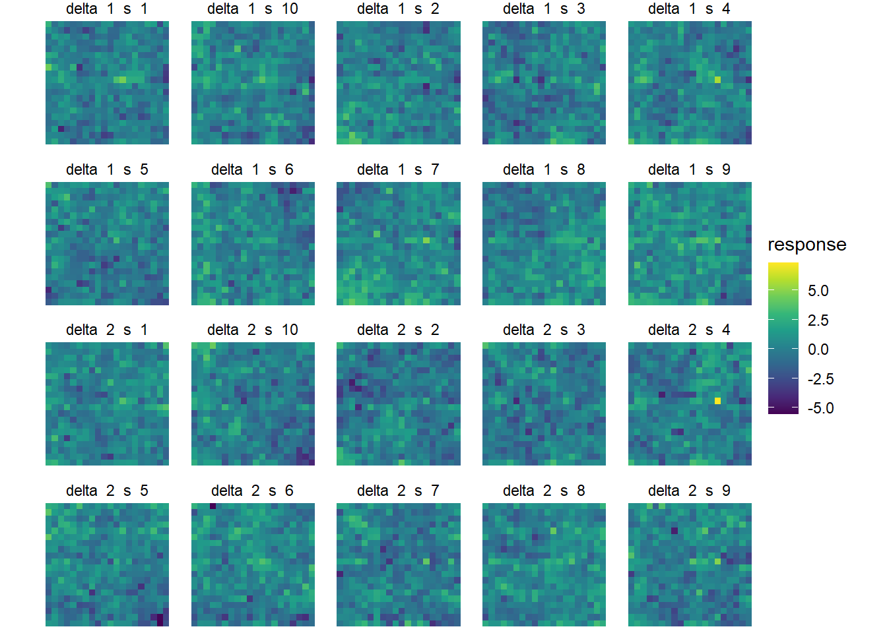
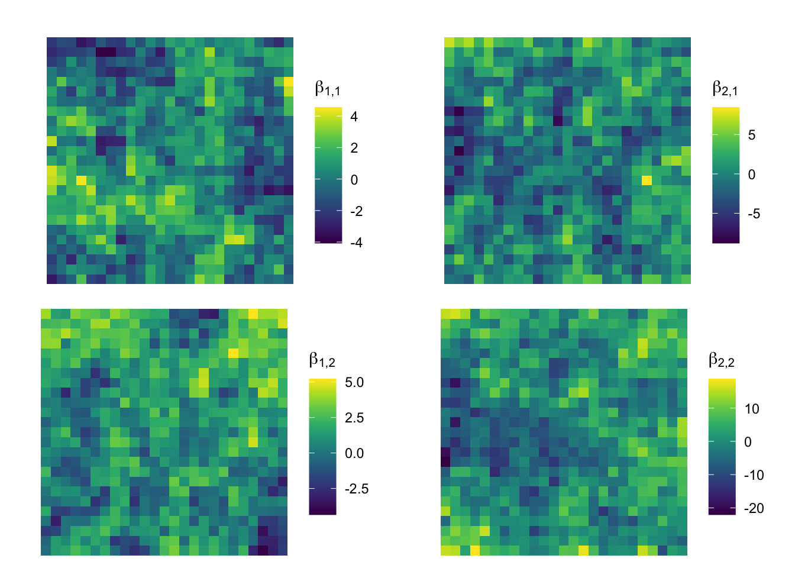
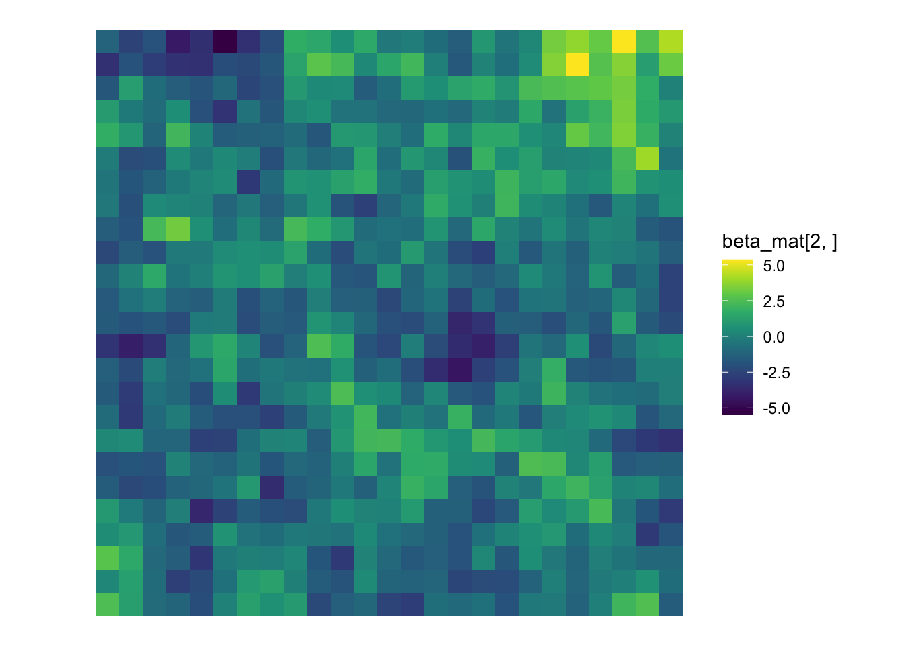
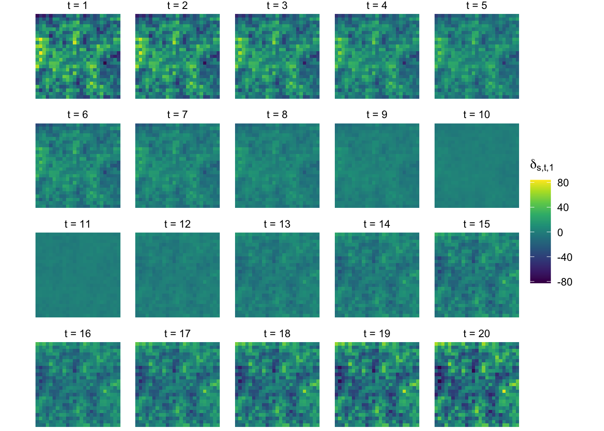
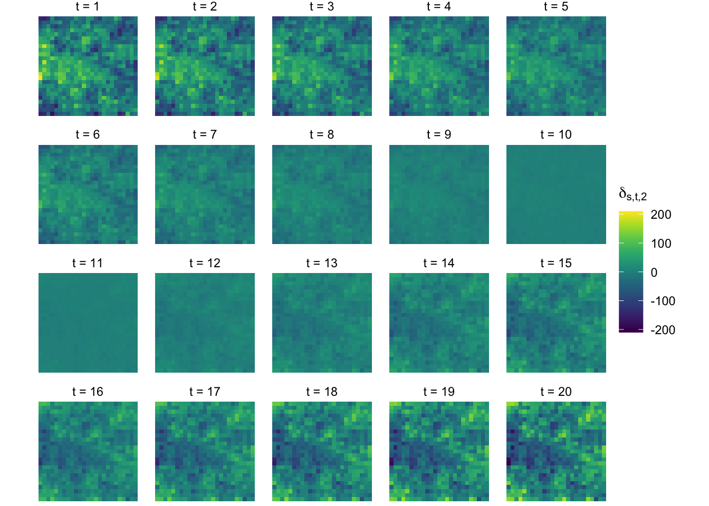
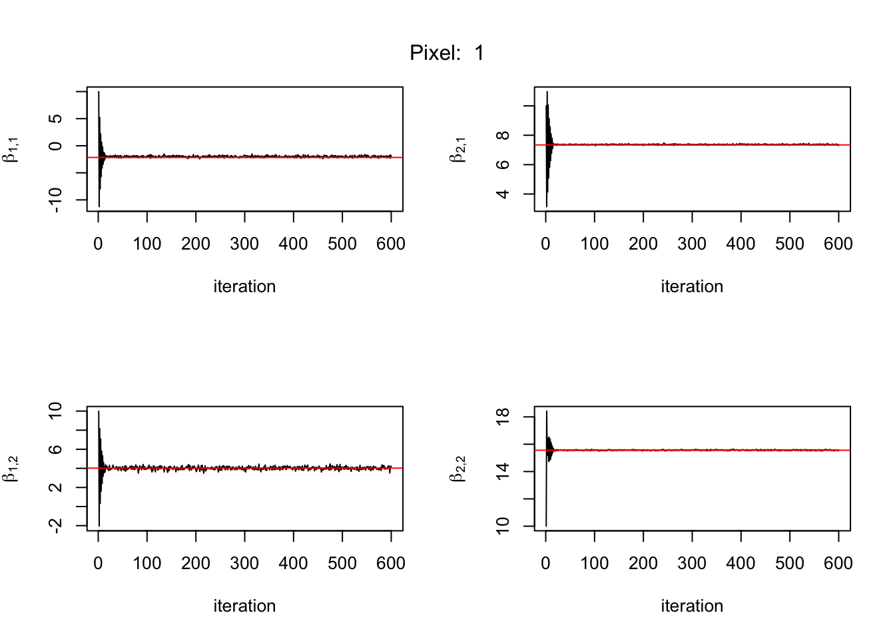

library(tidyverse)
library(igraph)
library(viridis)
library(matrixsampling)
library(MCMCpack)Step 13 - An alternative Heirarchical Model for Spatial Land Surface Phenology - Pixel Climate Trends
Bayesian
MCMC
Spatial
MCAR
Develop a streamlined analysis workflow to identify climate trends.
Intro
Here we will develop a workflow for a spatial analysis of land-surface phenology (LSP) using a vegetation index (VI) constructed from remotely-sensed surface reflectance and emmitance.
Let \(\mathcal{D}\) be the spatial domain partitioned into a regular lattice of \(n\) areal units which we will refer to as “locations” or “pixels”. Index these units by \(s \in S,\, S = \{1,2,\dots,n\}\).
For year \(t \in T\), a satellite captures imagery from the earth’s surface on a subset of days \(\mathbf{d}_t \subset \{1, 2, \dots, m\}\) where \(m\) may take on a value of 365 or 366 - the choice of does not appear to be consequential.
Let \(Y_{s,t,j} \in (0,1)\) be the vegetation index observed on day \(d_{t,j}\) of year \(t\) at pixel \(s\). Though the VI is restricted to the interval \((0,1)\), we nevertheless adopt a Gaussian model with mean function \(v(d;\boldsymbol\theta)\), parameterized by the \(p \times 1\) vector \(\boldsymbol\theta\), and variance \(\sigma^2\) which corresponds to the random noise in the satellite measurements. The assumption is that the true mean is bounded sufficiently far from the physical limits of \(0\) and \(1\) and the random noise is small so that there is practically no scenario in which we would be required to model values of \(0\) or \(1\). Notationally,
\[ Y_{s,t,j} \sim \text{Normal}\left(v(d_{t,j};\boldsymbol\theta_{s,t}), \sigma^2\right) \] where \(v(d;\boldsymbol{\theta}) : \mathbb{R} \rightarrow \mathbb{R}\) is the so-called double-logistic function, \[ v(d; \boldsymbol{\theta}) = \theta_1 + (\theta_2 - \theta_7d)\left(\frac{1}{1 +\exp\left\{\frac{d - \theta_3}{\theta_5}\right\}} - \frac{1}{1 +\exp\left\{\frac{d - \theta_4}{\theta_6}\right\}}\right) \] The parameters of the double-logistic function are readily interpretable in a way that will be explained later.
At the first step in the analysis we aggregate the data over some pre-defined space and time domain whose “typical” or “average” phenological characteristics are to be estimated using a frequentist non-linear least squares regression. This amounts to estimating \(\boldsymbol\theta\) for the aggregated data. Denote the estimate as \(\widehat{\boldsymbol\theta}_{0}\). We then linearize the double-logistic function centered on \(\widehat{\boldsymbol\theta}_{0}\), \[ v(d;\boldsymbol\theta) \approx v(d; \widehat{\boldsymbol\theta}_0) + \nabla_{\boldsymbol\theta} v(d; \boldsymbol\theta)|_{\boldsymbol\theta = \widehat{\boldsymbol\theta}_0}(\boldsymbol\theta -\widehat{\boldsymbol\theta}_0) \]
From this linearization we define the following, \[ \begin{align*} r_{s,t,j} &= Y_{s,t,j} - v(d_{t,j}, \widehat{\boldsymbol\theta}_0),\\ X_0(d) &= \nabla_{\boldsymbol\theta} v(d; \boldsymbol\theta)|_{\boldsymbol\theta = \widehat{\boldsymbol\theta}_0},\\ \boldsymbol\delta_{s,t} &= \boldsymbol\theta_{s,t} - \widehat{\boldsymbol\theta}_0. \end{align*} \] Here, \(r_{s,t,j}\) are the residuals from the model of the domain’s typical phenological characteristics, the gradient \(X_0(d) : \mathbb{R} \rightarrow \mathbb{R}^p\) is regarded as a set of basis functions, and \(\boldsymbol\delta_{s,t}\) represents the deviation in the phenological characteristics of pixel \(s\) in year \(t\) from the domain’s typical characteristics, \(\widehat{\boldsymbol\theta}_0\).
Next, we construct the \(m \times p\) “parent” design matrix \(\mathbf{X}_0\) with rows \(X_0(d)\), \(d = 1,2,\dots,m\). Then define the “child” design matrix \(\mathbf{X}_{s,t}\) for each pixel-year pair \((s,t)\) by sub-setting the rows of \(\mathbf{X}_0\) that correspond to the days \(\mathbf{d}_t\) for which VI measurements were collected at pixel \(s\).
This facilitates modeling through the residuals, \[ \mathbf{r}_{s,t} \sim \text{Normal}\left(\mathbf{X}_{s,t}\boldsymbol\delta_{s,t}, \sigma^2\mathbf{I}\right) \] where \(\mathbf{r}_{s,t}\) is the vector of residuals at pixel-year pair \((s,t)\) and \(\mathbf{I}\) is an identity matrix of sufficient dimension, unspecified because the number of VI measurements vary across pixel-year pairs.
We have transformed the task of modeling a non-linear mean function, \(v(d;\boldsymbol\theta)\), to modeling a linear mean function \(\mathbf{X}\boldsymbol\delta\). A key assumption is that any specific pixel-year pair does not deviate substantially from the domain’s typical phenological characteristics. Otherwise the linearization will produce a poor approximation to the original non-linear mean function.
If the goal of the analysis is to identify climate trends across pixels in the spatial domain as a function of other climatological factors, then we may consider collapsing this model into a more computationally manageable scheme.
We can construct the usual estimates for \(\boldsymbol\delta_{s,t}\) and their corresponding variance, \(\text{Var}(\widehat{\boldsymbol\delta}_{s,t})\), from our model of the residuals. These are of course, \[ \widehat{\boldsymbol\delta}_{s,t} = \left(\mathbf{X}^T_{s,t}\mathbf{X}_{s,t}\right)^{-1}\mathbf{X}^T_{s,t}\mathbf{r}_{s,t} \quad \text{and} \quad \text{Var}(\widehat{\boldsymbol\delta}_{s,t}) = \sigma^2\left(\mathbf{X}^T_{s,t}\mathbf{X}_{s,t}\right)^{-1} = \sigma^2\boldsymbol{\mathcal{X}}^{-1}_{s,t} \] leaving \(\sigma^2\) to be estimated later.
As a parenthetical note, we could go so far as to consider \(\sigma^2\) fixed by using the results of research on the measurement noise associated with atmospheric attenuation and the optical limitations of the satellite sensors.
We may from time to time use an emperical estimate for the covariance of the deviation vectors. We construct these by collecting \(\widehat{\boldsymbol\delta}_{s,t}\) over all spatial locations \(s \in \mathcal{D}\) for each year \(t \in T\), then computing the sample covariance matrix \[ \widehat{\boldsymbol\Omega}_t = \frac{1}{n-1}\sum_{s=1}^n(\widehat{\boldsymbol\delta}_{s,t} - \bar{\widehat{\boldsymbol\delta}}_{\cdot,t})(\widehat{\boldsymbol\delta}_{s,t} - \bar{\widehat{\boldsymbol\delta}}_{\cdot,t})^T \] note: but we only assume conditional independence of \(\widehat{\boldsymbol\delta}_{s,t}\), is this still okay to do?
From here we will consider a Bayesian hierarchical model incorporating climatological covariates, \(\boldsymbol{\mathcal{Z}}_{s,t}\) for pixel-year pair \((s,t)\), and the associated spatial effects \(\boldsymbol\beta_s\) on which we place a multivariate conditionally autoregressive (MCAR) prior with common propriety parameter \(\rho\).
We define \(\mathbf{W}\) as the first-order neighborhood matrix for the spatial domain \(\mathcal{D}\). The \(s,s'\) entry of \(\mathbf{W}\), \(w_{s,s'}\) is \(1\) if spatial locations \(s\) and \(s'\) are adjacent to one another and \(0\) otherwise. The number of neighbors for location \(s\) is the corresponding row sum of \(\mathbf{W}\), \(w_{s+}\).
The model is, \[ \begin{align*} \widehat{\boldsymbol{\delta}}_{s,t} &= \mathcal{Z}_{s,t}\boldsymbol\beta_{s} + \boldsymbol\epsilon_{s,t}\\ \boldsymbol\epsilon_{s,t} &\sim \text{MCAR}(\rho_\epsilon, \widehat{\boldsymbol\Omega}_t)\\ \\ \boldsymbol\beta_{s} &\sim \text{MCAR}(\rho_\beta, \boldsymbol\Lambda)\\ \boldsymbol\Lambda &\sim \text{InvWishart}(\nu, \mathbf{G})\\ \rho_\beta &\sim \text{Unif}(0,1)\\ \rho_\epsilon &\sim \text{Unif}(0,1) \end{align*} \] where \(\text{MCAR}(\rho, \boldsymbol\Lambda)\) represents the typical proper MCAR prior, \[ \boldsymbol\beta_s \,|\, \boldsymbol\beta_{s' \ne s}, \boldsymbol\Lambda, \rho_\beta \sim \text{Normal}\left(\rho_\beta\sum_{s' \in \mathcal{N}(s)}\frac{w_{s,s'}}{w_{s+}}\boldsymbol\beta_{s'}, \frac{\boldsymbol\Lambda}{w_{s+}}\right) \] \[ \widehat{\boldsymbol\delta}_{s,t} \,|\, \widehat{\boldsymbol\delta}_{s' \ne s,t}, \, \widehat{\boldsymbol\Omega}_t, \rho_{\epsilon} \sim \text{Normal}\left(\boldsymbol{\mathcal{Z}}_{s,t}\boldsymbol\beta_s +\rho_{\epsilon}\sum_{s' \in \mathcal{N}(s)} \frac{w_{s,s'}}{w_{s+}}\left(\widehat{\boldsymbol{\delta}}_{s',t} - \boldsymbol{\mathcal{Z}}_{s',t}\boldsymbol\beta_{s'}\right), \frac{\widehat{\boldsymbol{\Omega}}_t}{w_{s+}} \right) \]
The full conditionals for this model are:
\[ \begin{align*} \boldsymbol\beta_s \,|\, \text{rest} &\sim \text{Normal}\left(\mathbf{V}^{-1}_{\beta_s}\mathbf{M}_{\beta_s}, \mathbf{V}^{-1}_{\beta_s}\right)\\ \mathbf{V}_{\beta_s} &= w_{s+}\left(\sum_{t\in T}\boldsymbol{\mathcal{Z}}^T_{s,t}\widehat{\boldsymbol\Omega}^{-1}_{t}\boldsymbol{\mathcal{Z}}_{s,t} + \boldsymbol\Lambda^{-1}\right)\\ \mathbf{M}_{\beta_s} &= \sum_{t\in T} \left[\ \boldsymbol{\mathcal{Z}}^T_{s,t}\widehat{\boldsymbol\Omega}^{-1}_t\left(\rho_{\epsilon}\sum_{s' \in \mathcal{N}(s)}w_{s,s'}\left(\widehat{\boldsymbol\delta}_{s',t} - \boldsymbol{\mathcal{Z}}_{s',t}\boldsymbol\beta_{s'}\right) + w_{s+}\widehat{\boldsymbol\delta}_{s,t}\right)\right] + \rho_{\beta}\boldsymbol\Lambda^{-1}\sum_{s' \in \mathcal{N}(s)} w_{s,s'}\boldsymbol\beta_{s'}\\ \\\\ \boldsymbol\Lambda \,|\, \text{rest} &\sim \text{InvWishart}\left(\nu + n, \mathbf{G} + \mathbf{H}\right)\\ n &= \text{number of pixels}\\ \mathbf{H} &= \boldsymbol{\mathcal{B}}^T(\mathbf{D}-\rho\mathbf{W})\boldsymbol{\mathcal{B}}\\ \end{align*} \] Here \(\boldsymbol{\mathcal{B}}\) is a \(n \times pq\) matrix with rows equal to \(\boldsymbol\beta^T_s\) and \(\mathbf{D}\) is a diagonal matrix of the row sums from \(\mathbf{W}\).
Further, \(n = |S|\), the number of pixels, and \(k = |T|\), the number of years.
Though we defined the elements of the neighborhood matrix, \(\mathbf{W}\), to be either \(0\) or \(1\), we’ve elected to keep them in the derivation of the full conditional
Next will simulate data from this model. What follows is some scratch code for the simulation. Here we set \(p = 2\), the dimension of the response vectors, \(q = 2\), the number of covariates, and \(k=20\) years.
We start by constructing the spatial domain. In this case a regular lattice partitioned into \(n = 25^2\) areal units. The neighborhood matrix is the 1st order neighborhood structure.
# specify spatial domain
n <- 10^2
spat_domain <- expand.grid(x = 1:sqrt(n), y = 1:sqrt(n))
spat_domain$label <- 1:n
spat_domain_g <- make_lattice(c(sqrt(n),sqrt(n)), mutual = TRUE)
W <- as_adjacency_matrix(spat_domain_g, sparse=0)
D <- diag(rowSums(W))We sample the spatial random noise vectors for each pixel-year pair. At least initially, we specify these errors with no spatial variation by setting the \(\rho_\epsilon\) parameter equal to 0.
p = 2
q = 2
k = 20
# propriety parameter for epsilon MCAR
rho_eps <- 0.0
# Conditional Covariance Matrix.
# Assume Omega_t is constant across time for now.
# first, specify disired correlation and std deviation, then construct covariance matrix.
cOmega <- matrix(c(1, 0,
0, 1), byrow = T, ncol = p)
stddev_eps <- diag(c(1,1))
Omega <- stddev_eps%*%cOmega%*%stddev_eps
# Construct MCAR joint distribution covariance
inv_Sigma_eps <- kronecker((D-rho_eps*W), solve(Omega))
# Draw from eps ~ MCAR(rho_eps, Omega_t = Omega)
# eps array is 3-dim - left to right: response length, time, spatial index.
eps <- array(NA, dim = c(p,k,n))
for (t in 1:k){
eps[,t,] <- t(matrix(backsolve(chol(inv_Sigma_eps), rnorm(n*p)), byrow=T, ncol=p))
} We can plot a sequence by year of the 1st element in the random noise vector.
for (t in 1:k){
pl <- ggplot(spat_domain) +
geom_tile(aes(x, y, fill=eps[1,t,])) +
scale_y_reverse() +
scale_fill_gradientn(colors = viridis(10),
limits = c(min(eps[1,,]),max(eps[1,,]))) +
coord_fixed() +
theme_void()
par(mfrow=c(1,2))
plot(pl)
}And the second element.
for (t in 1:k){
pl <- ggplot(spat_domain) +
geom_tile(aes(x, y, fill=eps[2,t,])) +
scale_y_reverse() +
scale_fill_gradientn(colors = viridis(10),
limits = c(min(eps[2,,]),max(eps[2,,]))) +
coord_fixed() +
theme_void()
plot(pl)
}
An alternate way to plot.
display_ls <- vector(mode = "list", length = k)
for (t in 1:k){
temp <- spat_domain
temp$eps1 <- eps[1,t,]
temp$eps2 <- eps[2,t,]
temp$year <- rep(t, n)
display_ls[[t]] <- temp
}
display_df <- do.call(rbind, display_ls)
ggplot(display_df) +
geom_tile(aes(x, y, fill=eps1)) +
scale_y_reverse() +
scale_fill_gradientn(colors = viridis(10),
limits = c(min(display_df$eps1),max(display_df$eps1))) +
coord_fixed() +
theme_void() +
facet_wrap(~year)
ggplot(display_df) +
geom_tile(aes(x, y, fill=eps2)) +
scale_y_reverse() +
scale_fill_gradientn(colors = viridis(10),
limits = c(min(display_df$eps2),max(display_df$eps2))) +
coord_fixed() +
theme_void() +
facet_wrap(~year)
Now sample beta for each site, this time with some spatial variation.
# propriety parameter for beta MCAR
rho_beta <- 0.99
# Conditional Covariance Matrix
# beta_s is regarded as a vector of stacked beta_1, beta_2 vectors
# Assume beta_1 and beta_2 vectors are independent for now.
# cLambda <- matrix(c( 1, 0, 0.9, 0, 0.9, 0,
# 0, 1, 0, 0, 0, 0,
# 0.9, 0, 1, 0, 0.9, 0,
# 0, 0, 0, 1, 0, 0,
# 0.9, 0, 0.9, 0, 1, 0,
# 0, 0, 0, 0, 0, 1), byrow = T, ncol = p*q)
# cLambda <- matrix(c( 1, 0, 0, 0, 0, 0,
# 0, 1, 0, 0, 0, 0,
# 0, 0, 1, 0, 0, 0,
# 0, 0, 0, 1, 0, 0,
# 0, 0, 0, 0, 1, 0,
# 0, 0, 0, 0, 0, 1), byrow = T, ncol = p*q)
cLambda <- diag(p*q)
cLambda <- matrix(c( 1, 0, 0, 0,
0, 1, 0, 0,
0, 0, 1, 0.7,
0, 0, 0.7, 1 ), byrow = T, ncol = p*q)
stddev_beta <- diag(c(2,2,5,5))
Lambda <- stddev_beta%*%cLambda%*%stddev_beta
#Lambda <- diag(c(1,1,10,10,100,100))
# Lambda <- 10*matrix(c( 1, 0, 0, 0,
# 0, 1, 0, 0,
# 0, 0, 1, 0,
# 0, 0, 0, 1 ), byrow = T, ncol = p*q)
# Construct MCAR joint distribution covariance
inv_Sigma_beta <- kronecker((D-rho_beta*W), solve(Lambda))
# Draw from beta ~ MCAR(rho_beta, Lambda)
# beta array is 3-dim - left to right: p, q, spatial index
# note: the beta_s vectors are drawn in joint vectorized form.
# first, split the joint vector according to spatial index
# second, collapse the (p*q x 1) vectors into (p x q) matrices
beta_mat <- t(matrix(backsolve(chol(inv_Sigma_beta), rnorm(n*p*q)), byrow=T, ncol=p*q))
# For now assume zero mean.
# beta_mat[1,] <- 0
# beta_mat[2,] <- 0
# construct array version of beta
beta_arr <- array(NA, dim = c(p,q,n))
beta_arr[1:p,1:q,] <- beta_matggplot(spat_domain) +
geom_tile(aes(x, y, fill=beta_mat[3,])) +
scale_y_reverse() +
scale_fill_gradientn(colors = viridis(10)) +
coord_fixed() +
theme_void()
ggplot(spat_domain) +
geom_tile(aes(x, y, fill=beta_mat[4,])) +
scale_y_reverse() +
scale_fill_gradientn(colors = viridis(10)) +
coord_fixed() +
theme_void()
Next construct the covariate array and sample the response vectors, \(\boldsymbol\delta_{s,t}\).
# sample covariates
# For now, the only covariate is time in years, centered and scaled.
# Consider changing in the future.
# Z array is 3 dim - left to right: time, covariate vector length, spatial index
Z <- array(NA, dim=c(k,q,n))
for (s in 1:n){
#Z[,,s] <- matrix(c(rep(1,k),rnorm((q-1)*k,0,1)), ncol = q)
Z[,,s] <- matrix(c(rep(1,k), scale(1:k, scale = F)), ncol = q)
}
# Rather than sampling covariates from a normal distribution, let's
# let's just focus on an intercept term and centered equally spaced term.
# Now draw delta (naively via loops)
# delta array is 3-dim - left to right: response vector length, time, space
delta <- array(NA, dim = c(p,k,n))
for (s in 1:n){
for (t in 1:k){
delta[,t,s] <- beta_arr[,,s]%*%Z[t,,s] + eps[,t,s]
}
}Plot \(\boldsymbol\delta_{s,t,1}\) by year.
for (t in 1:k){
pl <- ggplot(spat_domain) +
geom_tile(aes(x, y, fill=delta[1,t,])) +
scale_y_reverse() +
scale_fill_gradientn(colors = viridis(10),
limits = c(min(delta[1,,]),max(delta[1,,]))) +
coord_fixed() +
theme_void()
plot(pl)
}Plot \(\delta_{s,t,2}\) by year.
for (t in 1:k){
pl <- ggplot(spat_domain) +
geom_tile(aes(x, y, fill=delta[2,t,])) +
scale_y_reverse() +
scale_fill_gradientn(colors = viridis(10),
limits = c(min(delta[2,,]),max(delta[2,,]))) +
coord_fixed() +
theme_void()
plot(pl)
}display_ls <- vector(mode = "list", length = k)
for (t in 1:k){
temp <- spat_domain
temp$eps1 <- eps[1,t,]
temp$eps2 <- eps[2,t,]
temp$delta1 <- delta[1,t,]
temp$delta2 <- delta[2,t,]
temp$year <- rep(t, n)
display_ls[[t]] <- temp
}
display_df <- do.call(rbind, display_ls)
ggplot(display_df) +
geom_tile(aes(x, y, fill=delta1)) +
scale_y_reverse() +
scale_fill_gradientn(colors = viridis(10),
limits = c(min(display_df$delta1),max(display_df$delta1))) +
coord_fixed() +
theme_void() +
facet_wrap(~year)
ggplot(display_df) +
geom_tile(aes(x, y, fill=delta2)) +
scale_y_reverse() +
scale_fill_gradientn(colors = viridis(10),
limits = c(min(display_df$delta2),max(display_df$delta2))) +
coord_fixed() +
theme_void() +
facet_wrap(~year)We can go back and simulate more complex data sets at a later time with relative ease. For now, let’s move on to the MCMC.
The MCMC will be a combination of Metropolis and Gibbs steps. Gibbs steps using the full conditionals for \(\boldsymbol\beta_s\) and \(\boldsymbol\Lambda\) and Metropolis steps for the MCAR propriety parameters \(\rho_\epsilon\) and \(\rho_\beta\).
This code is not very computationally efficient at this point in time. The eventual goal will be to refine it later.
niters <- 100
burn <- 0.1*niters
# storage
keep_beta_mat <- array(0, dim = c(p*q, n, niters))
keep_Lambda <- array(0, dim = c(p*q, p*q, niters))
keep_rho_eps <- rep(0, niters)
keep_rho_beta <- rep(0, niters)
# initial values
mc_beta_mat <- beta_mat
mc_beta_mat <- matrix(10, nrow = p*q, ncol = n)
mc_beta_arr <- beta_arr
mc_beta_arr[1:p,1:q,] <- mc_beta_mat
mc_Lambda <- Lambda
mc_rho_eps <- 0
mc_rho_beta <- 0.99
keep_beta_mat[,,1] <- mc_beta_mat
keep_Lambda[,,1] <- mc_Lambda
keep_rho_eps[1] <- mc_rho_eps
keep_rho_beta[1] <- mc_rho_beta
# prior parameters
nu <- p*q - 1 + 0.1 # come back to check this
G <- diag(p*q)Scratch code: Test some results for the beta full conditional calculation. - computing V.
Code
# re-establish a computationally efficient result from step 3.
Z[,,1]
Omega
Z[,,1]
test <- matrix(0, nrow = p*q, ncol = p*q)
for (t in 1:k){
test <- test + t(kronecker(t(Z[t,,1]), diag(2)))%*%Omega%*%kronecker(t(Z[t,,1]), diag(2))
}
# same result!
test
kronecker(t(Z[,,1])%*%Z[,,1], Omega)
# what if Omega changes with time? Not sure.
rep(1:k, each = 4)
Omega_arr <- array(rep(1:k, each = 4), dim = c(p,p,k))
Omega_arr[,,3]
# sum over the third dimension of the array
rowSums(Omega_arr, dims = 2)
test <- matrix(0, nrow = p*q, ncol = p*q)
for (t in 1:k){
test <- test + t(kronecker(t(Z[t,,1]), diag(2)))%*%Omega_arr[,,t]%*%kronecker(t(Z[t,,1]), diag(2))
}
# these are actually different. . . we'll need to use the naive way for now.
test
kronecker(t(Z[,,1])%*%Z[,,1], rowSums(Omega_arr, dims = 2))Scratch code: Test some more results for the beta full conditional calc - computing M.
Code
w_plus <- rowSums(W)
# get index of neighbors of s
s = 1
neighbors <- which(W[s,]==1)
neighbor_idx <- apply(W, MARGIN = 1, function(x) which(x==1))
# get weights - maybe consider storing these weights in a different way. the matrix is sparse after all.
neighbor_weights <- W[s,neighbors]
# sum the neighboring beta_s vectors
sum_neighbor_beta <- beta_mat[,neighbors]%*%neighbor_weights
# compute the last term.
rho_beta*solve(Lambda)%*%sum_neighbor_beta
# now try to compute the first neighbor sum, the one in the brackets.
Bz <- delta
# computing residuals needed in full conditional for beta - M.
for (t in 1:k){
for (s in 1:n){
Bz[,t,s] <- beta_arr[,,s]%*%Z[t,,s]
}
}
resid <- delta - Bz
s <- 1
t <- 1
sum_neighbor_resid <- resid[,t,neighbors]%*%neighbor_weights
kronecker(Z[t,,s], diag(p))
# I think there is an error in the full conditionals?
test <- matrix(0,nrow=p*q, ncol=1)
for (t in 1:k){
test <- test + t(kronecker(Z[t,,s], diag(p)))%*%Omega_arr[,,t]%*%(resid[,t,neighbors]%*%neighbor_weights + w_plus[s]*delta[,t,s])
}
# Full M_beta_s term
rho_eps*test + rho_beta*solve(Lambda)%*%sum_neighbor_beta
# delta <- array(NA, dim = c(p,k,n))
# for (s in 1:n){
# for (t in 1:k){
# delta[,t,s] <- beta_arr[,,s]%*%Z[t,,s] + eps[,t,s]
# }
# }
beta_arr[,,1]%*%Z[1,,1]
Bz[,1,1]
delta[,1,1]
eps[,1,1]
(delta - Bz)[,1,1:2]
eps[,1,1:2]
delta[,1,1]
beta_arr[,,1]%*%Z[1,,1]
delta[,1,1:2] - Bz[,1,1:2]Scratch code: Test some more results for the Lambda full conditional calc - computing H.
w_plus <- rowSums(W)
D <- diag(w_plus)
DmrW <- D-rho_beta*W
H <- beta_mat%*%(D - rho_beta*W)%*%t(beta_mat)
MCMCpack::riwish(nu + n, G + H)Work in progress MCMC loop.
# Omega is constant in time for now. May need to update this to
# consider different Omegas for each year.
inv_Omega <- solve(Omega)
inv_Omega_arr <- array(rep(c(inv_Omega), k), dim = c(p,p,k))
# Pre-compute the first summation term for V in the full conditional for beta.
sumt_ZT_Omega_inv_Z <- array(0, dim = c(p*q, p*q, n))
for (s in 1:n){
for (t in 1:k){
sumt_ZT_Omega_inv_Z[,,s] <- sumt_ZT_Omega_inv_Z[,,s] +
t(kronecker(t(Z[t,,s]),diag(p)))%*%inv_Omega_arr[,,t]%*%kronecker(t(Z[t,,s]), diag(p))
}
}
# collect the neighbor indices for use within the sampling loop
neighbor_idx <- apply(W, MARGIN = 1, function(x) which(x==1))
# Pre-compute the number of neighbors for each pixel.
w_plus <- rowSums(W)
D <- diag(w_plus)
for (iter in 2:niters){
# computing residuals needed in full conditional for beta - M.
# probably a better way to do this.
Bz <- delta
for (t in 1:k){
for (s in 1:n){
Bz[,t,s] <- mc_beta_arr[,,s]%*%Z[t,,s]
}
}
resid <- delta - Bz
inv_mc_Lambda <- solve(mc_Lambda)
# sample beta_s
for (s in 1:n){
neighbor_weights <- W[s, neighbor_idx[[s]]] # consider compiling these weights in a list of vectors outside of the sampling loop.
V <- w_plus[s]*sumt_ZT_Omega_inv_Z[,,s] + w_plus[s]*inv_mc_Lambda
# revisit for efficiency
temp <- 0
for (t in 1:k){
temp <- temp + t(kronecker(t(Z[t,,s]),diag(p)))%*%inv_Omega_arr[,,t]%*%(mc_rho_eps*resid[,t,neighbor_idx[[s]]]%*%neighbor_weights +w_plus[s]*delta[,t,s])
}
M <- temp + mc_rho_beta*(inv_mc_Lambda%*%(mc_beta_mat[,neighbor_idx[[s]]]%*%neighbor_weights))
V_inv <- chol2inv(chol(V))
mc_beta_mat[,s] <- V_inv%*%M+t(chol(V_inv))%*%rnorm(p*q)
}
mc_beta_arr[1:p,1:q,] <- mc_beta_mat
# sample Lambda
H <- beta_mat%*%(D - rho_beta*W)%*%t(beta_mat)
mc_Lambda <- MCMCpack::riwish(nu + n, G + H)
# sample rho_eps
# sample rho_beta
keep_beta_mat[,,iter] <- mc_beta_mat
keep_Lambda[,,iter] <- mc_Lambda
}Construct a few traceplots of the beta parameter.
burn <- 2
for (s in 1:10){
par(mfrow = c(2,2))
for (i in 1:(p*q)){
plot(burn:niters, keep_beta_mat[i,s,burn:niters], type = "l")
abline(h = beta_mat[i,s], col = "red")
}
}
Construct a few trace plots of the Lambda matrix
# diagonal
# for (i in 1:(p*q)){
# plot(burn:niters, keep_Lambda[i,i,burn:niters], type = "l")
# abline(h = Lambda[i,i], col = "red")
# }
# off-diagonal
for (i in 1:(p*q)){
for (j in i:(p*q)){
plot(burn:niters, keep_Lambda[i,j,burn:niters], type = "l")
abline(h = Lambda[i,j], col = "red")
}
}